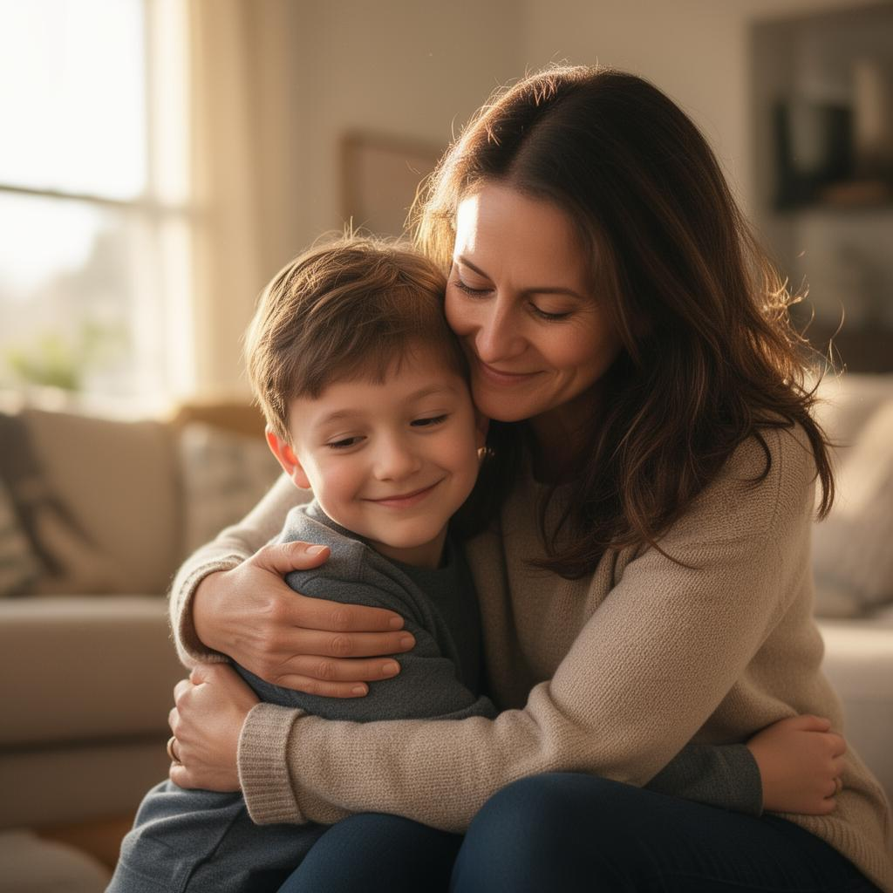

Missão
Promover a inclusão de pessoas com autismo por meio de informação, acolhimento às famílias e ações de impacto na comunidade.
A Amar Itapecerica acolhe famílias, promove a conscientização sobre o autismo e constrói pontes para uma sociedade mais inclusiva, empática e acessível para todos.
Somos uma organização independente, formada por famílias, profissionais e voluntários comprometidos com a causa do autismo em Itapecerica e região.

A Amar Itapecerica nasceu da união de famílias atípicas que buscavam informação, apoio mútuo e respeito para seus filhos. Hoje, somos referência regional em ações de inclusão e conscientização sobre o autismo.
Acreditamos que a inclusão começa pela escuta — e que cada criança, adolescente e adulto autista merece oportunidades reais para florescer.
Promover a inclusão de pessoas com autismo por meio de informação, acolhimento às famílias e ações de impacto na comunidade.
Construir, até 2030, uma cidade reconhecida pela acessibilidade, respeito e oportunidades reais para pessoas neurodivergentes.
Empatia, transparência, respeito à diversidade e compromisso com cada família que cruza o nosso caminho.
Iniciativas contínuas que conectam famílias, escolas e a comunidade em torno de uma cultura de inclusão.
Encontros mensais de troca de experiências entre pais e responsáveis, com mediação de psicólogos voluntários.
Saiba mais →Capacitação de professores e equipes pedagógicas para receber alunos autistas com qualidade e acolhimento.
Saiba mais →Mês de campanhas, palestras gratuitas e ações públicas para conscientizar a cidade sobre o Transtorno do Espectro Autista.
Saiba mais →Toda contribuição — financeira, em tempo ou em parceria — chega a famílias que precisam de você.
Doe seu tempo e talento. Temos espaço para todos: profissionais, estudantes e famílias.
Quero participarÉ uma empresa? Apoie nossa causa com responsabilidade social e amplie o impacto.
Falar com a equipeResultados de anos de trabalho coletivo, voluntariado e o apoio essencial de pessoas como você.
Quando recebi o diagnóstico do meu filho, me senti perdida. A Amar Itapecerica me mostrou que eu não estava sozinha. Hoje somos uma família mais forte.
Ser voluntário aqui transformou a forma como enxergo a inclusão. Cada encontro é uma lição de empatia e propósito.
O projeto Escola Inclui mudou completamente nossa rotina escolar. Os professores hoje têm preparo e olhar humano para nossas crianças.
Tem dúvidas, quer doar, se voluntariar ou propor uma parceria? Adoraríamos ouvir você.
Estamos disponíveis de segunda a sexta, das 9h às 17h.